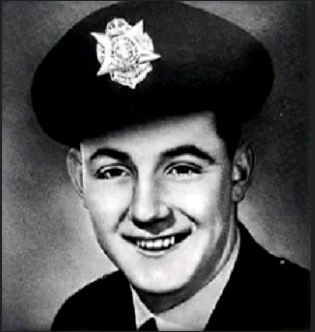

The George Howell Shield
Victoria Police Cricket Club v Assumption College, Kilmore
Constable George Howell (10323) was stationed at Malvern East and on 30th January 1952 after swapping shifts he was to work from 5p.m. until 1:30a.m. George had been assigned the task of patrolling the area surrounding the Crystal Palace Theatre in Dandenong Road, to combat escalating car theft.
About 10.35pm George intercepted a man tampering with a Morris Minor motor car. After a struggle the man ran off and the Constable ran after him. The offender then shot the Constable in the stomach with a sawn-off .22 calibre rifle. Although unarmed and mortally wounded George continued to chase the gunman before collapsing in the centre of Normanby Road. The offender then escaped.
While George lay fighting for his life he still managed to provide vital information to members at the scene. At the hospital he provided a dying deposition and told Investigators everything he could about his assailant. With his fiance at his bedside, George went into surgery.
Unfortunately the following morning George died. He was only 25 years old.
George's funeral was one of the largest ever seen in Melbourne at that time with 3000 attendees. Upon capture, George's assailant was convicted of murder and his death sentence subsequently commuted to life imprisonment. George Howell was posthumously awarded the Kings Police Medal for 'conspicuous gallantry in attempting the arrest of an armed criminal'.
It is not known if George had any cricketing aspirations but later this same year the Russell Street Cricket Club struck the inaugural George Howell Shield during a match against Kilmore College in his honour. After a period of time, for unknown reasons the event stopped. Whatever happened to the original George Howell Shield is unknown, however over 50 years later this event was reformed and now continues as a legacy to honour a colleague who missed the opportunities in life that we all take for granted.

The George Howell Shield was re-established as an annual fixture for the Victoria Police Cricket Club against Assumption College in Kilmore in 2006
To learn more about George Howell and the investigation into his Murder, including newspaper articles from 1955 which follow the case, click here